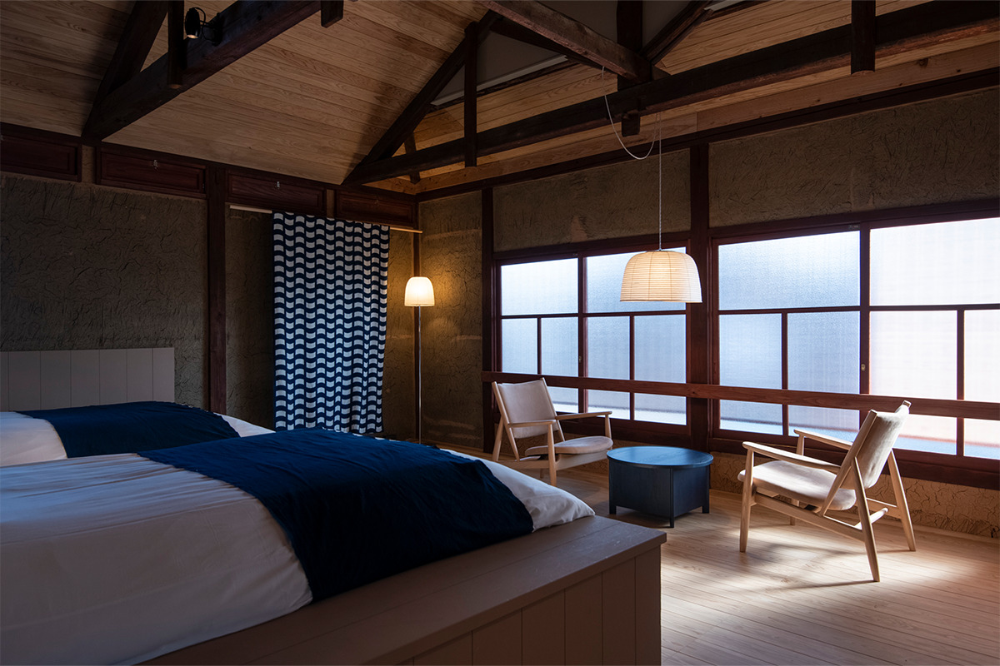
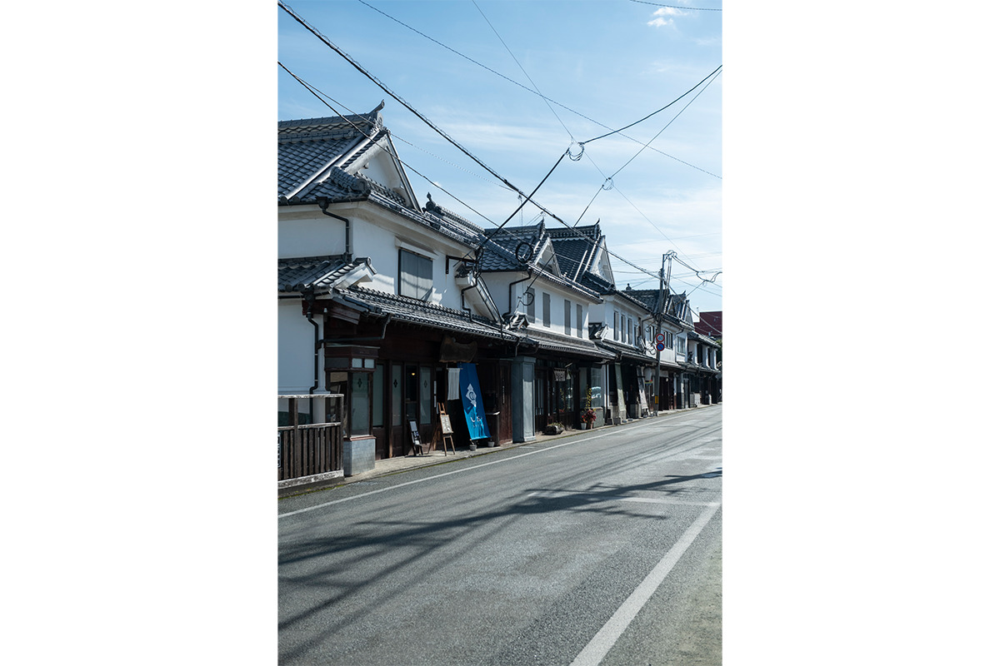
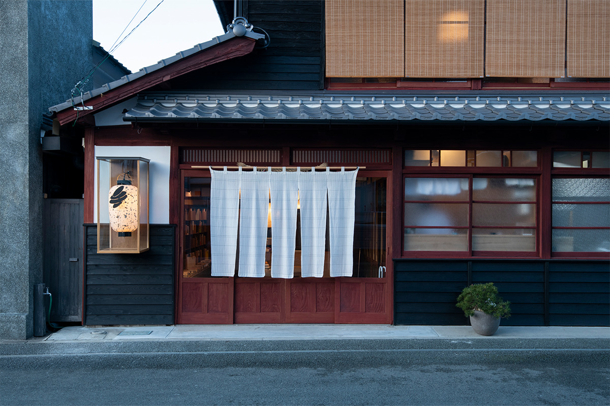
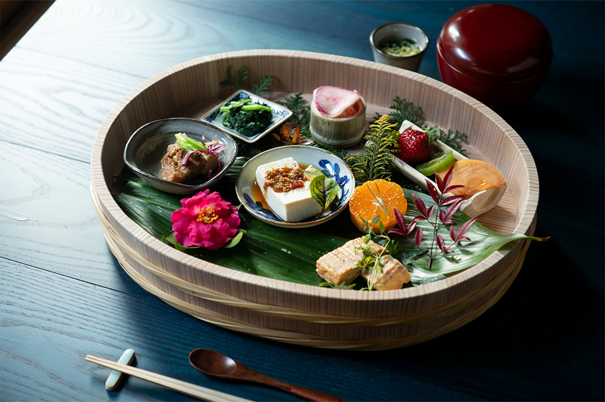
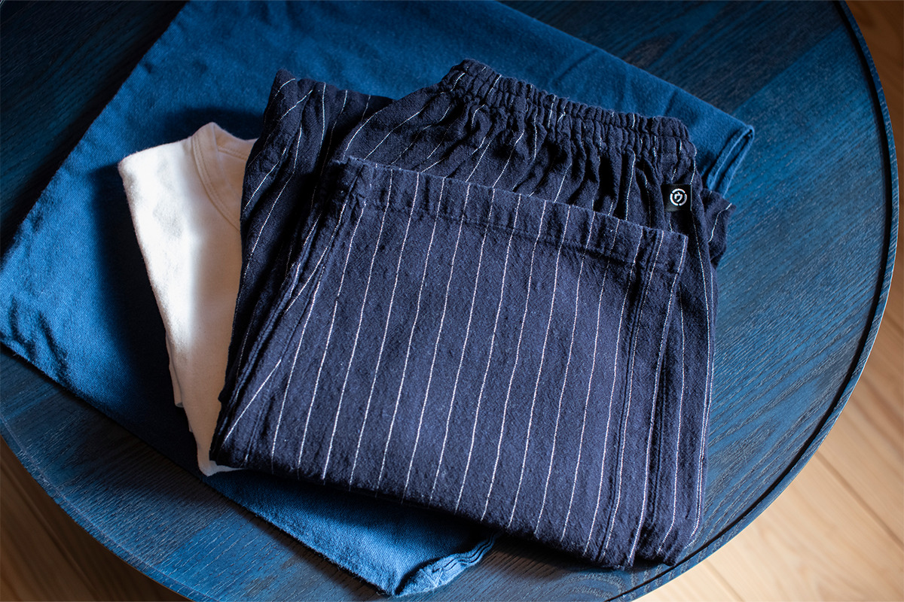
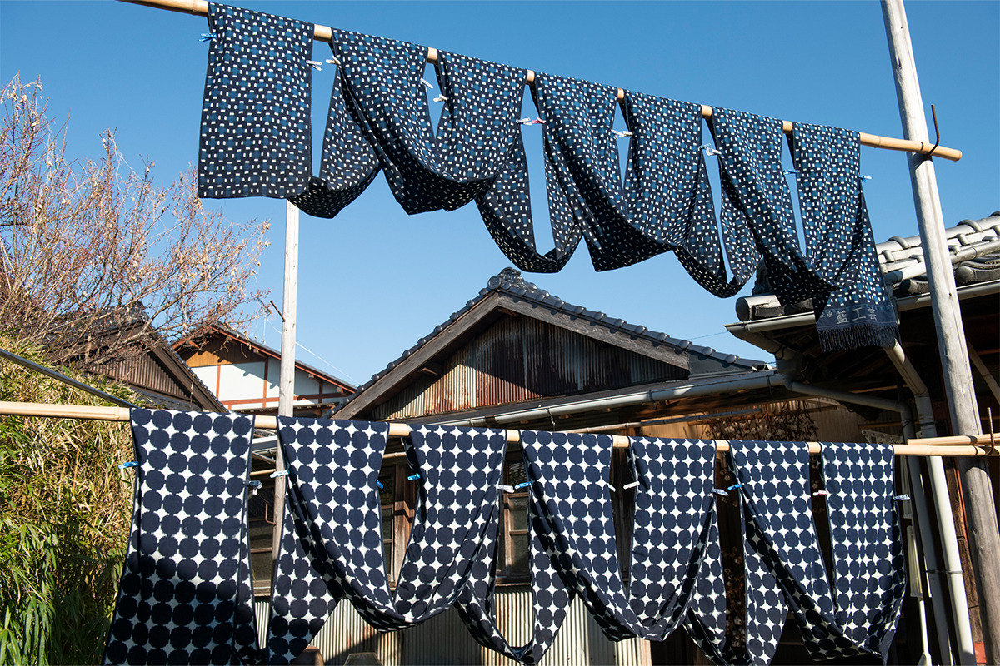
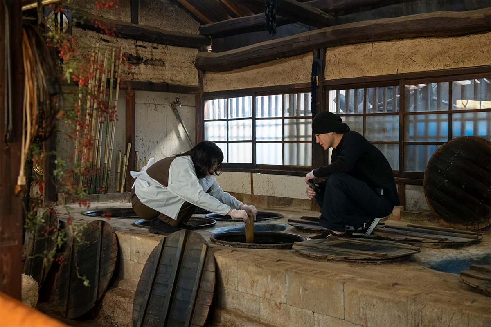
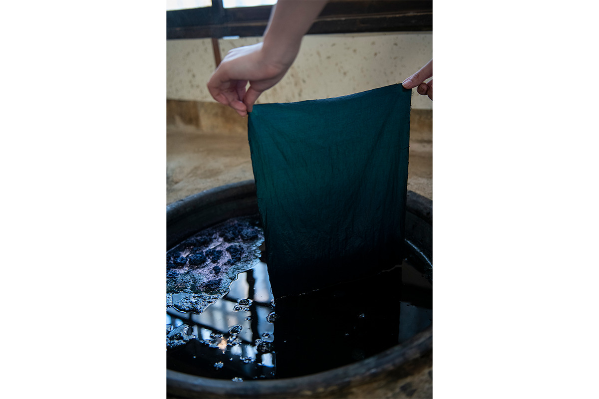
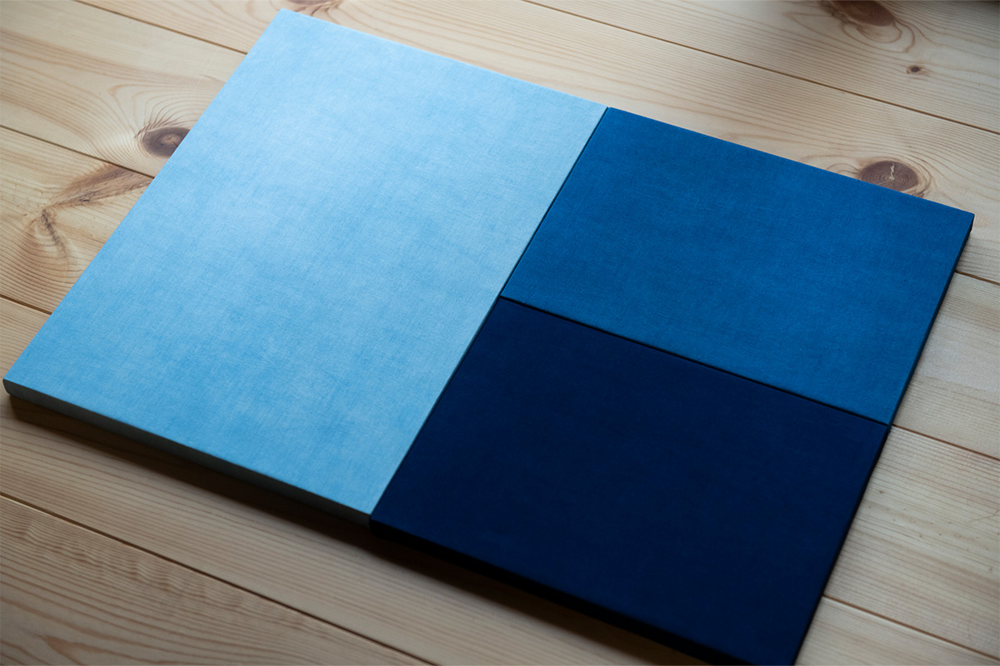

Префектура Фукуока · Ямэ и Хирокава · ремёсла
Ямэ и Хирокава: ночь в гостинице ремёсел и урок индиго у мастеров касури

Тем, кто любит вещи, сделанные руками, стоит поехать туда, где эти вещи делают. На юге префектуры Фукуока такое место есть: город Ямэ, где можно поселиться среди работ местных мастеров, а утром отправиться в мастерскую и окрасить ткань индиго.
Город
Ямэ: старые дома и живые ремёсла

Город Ямэ лежит на юге префектуры Фукуока, и для путешествия, в котором хочется не только смотреть, но и пробовать руками, он подходит идеально. Вокруг много леса, воды и чайных плантаций, и на этом богатстве выросли традиционные ремёсла: ткачество, бамбук, бумага васи. К мастерам здесь водят экскурсии, а в некоторые мастерские можно записаться на занятие.
Сердце старого Ямэ это квартал Ямэ-Фукусима. Улицы тут застроены купеческими домами, и многие из них до сих пор живые: в них торгуют, работают и теперь ещё и принимают гостей.
Где жить
Craft Inn té: гостиница из двух старых домов

Осенью 2021 года в Ямэ открылась гостиница Craft Inn té, задуманная как место, где можно почувствовать мастерство ремесленников Ямэ и всего Кюсю. Она занимает два отреставрированных традиционных дома квартала Ямэ-Фукусима. Номеров всего три, и у каждого своя тема: индиго, бамбук и бумага васи. Мебель и вещи в комнатах сделаны местными мастерами, и в каждой видны их приёмы и находки.
Больше всего нас заинтересовала «Комната индиго». Гобелен из курумэ-гасури, ткани с размытым узором из окрашенных заранее нитей, и стол, окрашенный индиго, сделала мастерская «Айдзомэ касури кобо». Когда видишь такие вещи вблизи, сразу хочется понять, как они получились.


Стоимость номера на двоих с завтраком в 2022 году начиналась от 19 200 иен. В каждом номере своя ванная.
Craft Inn té
- Адрес
- префектура Фукуока, Ямэ, Хоммати, 120-1 (бывший дом Цукамото)
- Телефон
- +81 943-25-7577
- Номера
- 3
- Цены / Вход
- от 19 200 иен за номер на двоих с завтраком
- Сайт
- craftinn.jp
Мастер-класс
Индиго в Хирокаве

Лучший способ разобраться в индиго это покрасить что-нибудь самому. Мастерская «Айдзомэ касури кобо» в соседнем городке Хирокава ткёт курумэ-гасури по старинке: красит натуральным индиго и ткёт на ручных станках. Сырьё для краски, ферментированные листья индиго сукумо, закладывают в большие чаны и подкармливают пшеничными отрубями и известью из ракушек, чтобы шло брожение. Ухаживать за таким индиго приходится долго и терпеливо.

«Индиго живое»
мастер пятого поколения
Мастер говорит о чанах как о живых существах: в одних брожение идёт бурно, и индиго «молодое», в других оно спокойнее, «повзрослевшее». С виду он немногословный, сдержанный ремесленник, но любит индиго и ткани больше, чем кто-либо. На занятии можно потрогать местное сырьё и узнать, откуда пошли техники курумэ-гасури и крашения индиго.


Занятие длится два-три часа и в 2022 году стоило 13 900 иен с человека. Записываются через сайт UNA Laboratories, которая устраивает и другие ремесленные туры по Ямэ: прогулки по мастерским квартала Ямэ-Фукусима, ткачество и чай Ямэ в посуде местных мастеров. Саму мастерскую можно посетить, заранее договорившись по телефону.
«Айдзомэ касури кобо»
- Адрес
- префектура Фукуока, уезд Ямэ, Хирокава, Наганобу, 241
- Телефон
- +81 943-32-0332
- Даты
- суббота с 14:00, воскресенье с 10:00 (дни меняются от месяца к месяцу)
- Цены / Вход
- 13 900 иен с человека, 2–3 часа
- Сайт
- unalabs.jp
Бамбук, бумага васи, ткани: ремёсел в Ямэ так много, что в каждый приезд можно найти новую мастерскую и новых людей.
Фото: Хироси Мидзусаки.